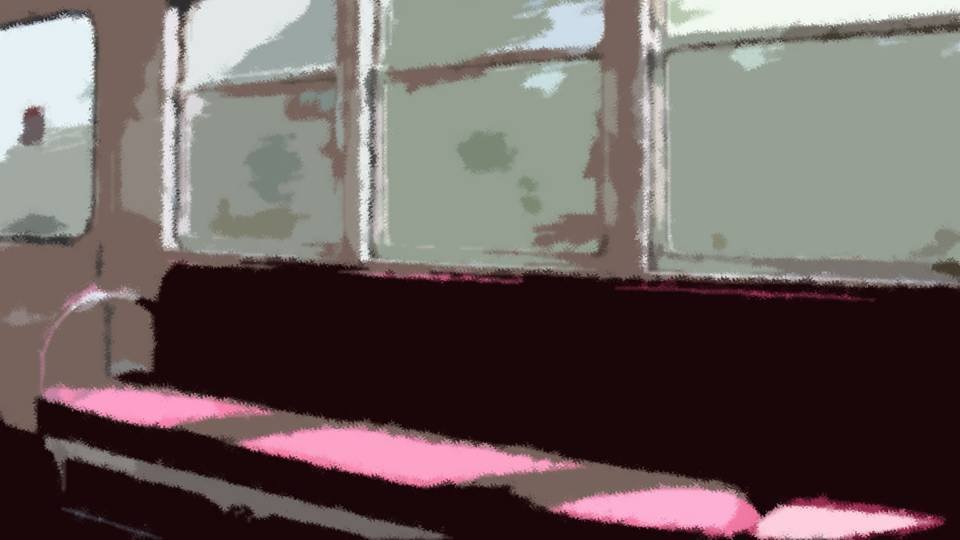
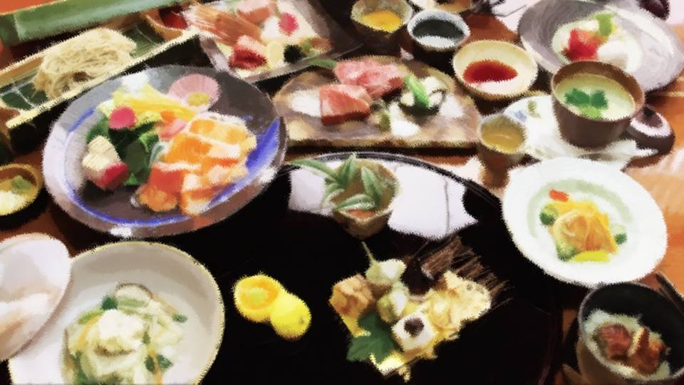
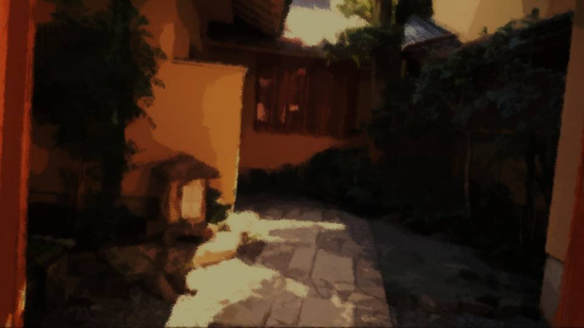
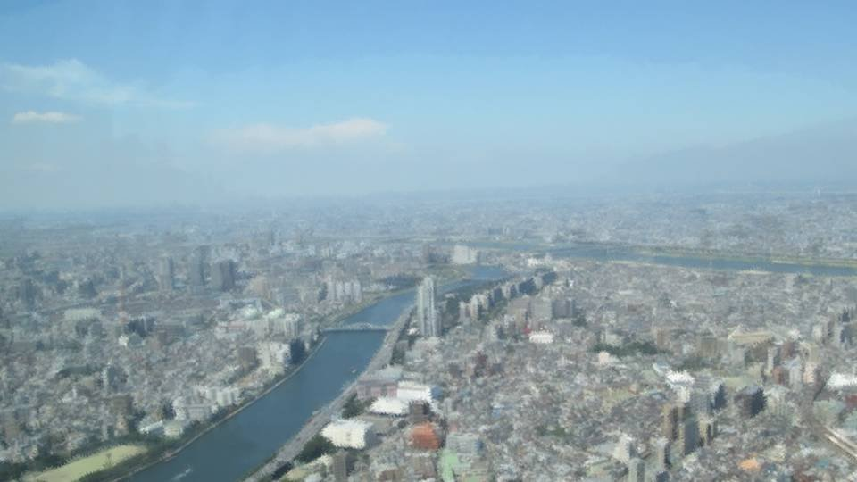
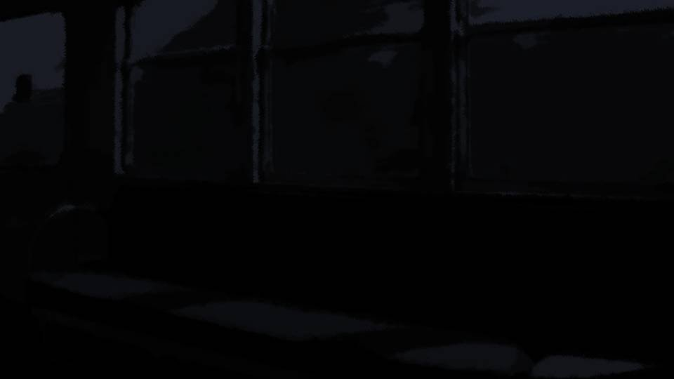

心のバトン

時折見える桜の群れ。
車窓の景色は、毎年毎年変わりはない。
何度も通ると、ランドマークになる建物も覚えてしまう。
車窓の景色は、毎年毎年変わりはない。
何度も通ると、ランドマークになる建物も覚えてしまう。
何のためにあるのか分からないタワー。
前衛的過ぎる芸術家がデザインしたのか、奇抜な配色と構造の民家。
タワーも奇抜な民家も、永遠に建っているわけではない。
数十年、数百年すれば、別の景色に変わる。
今年、荒田集落も変わらないといけない。
前衛的過ぎる芸術家がデザインしたのか、奇抜な配色と構造の民家。
タワーも奇抜な民家も、永遠に建っているわけではない。
数十年、数百年すれば、別の景色に変わる。
今年、荒田集落も変わらないといけない。
私は四月五日――十三回忌の3日前に荒田集落へ行くことにした。
当初は四月七日に到着予定であったが、のんびりしているわけにもいかなくなった。
あの無邪気で子供っぽい立ち振る舞いの中で、的確なアドバイスをしてくれた五島ちゃん。
彼女には、感謝してもしきれない。
叔母さんが東京まで連れてきて高い料亭でもてなしたのも、分かる気がする。
当初は四月七日に到着予定であったが、のんびりしているわけにもいかなくなった。
あの無邪気で子供っぽい立ち振る舞いの中で、的確なアドバイスをしてくれた五島ちゃん。
彼女には、感謝してもしきれない。
叔母さんが東京まで連れてきて高い料亭でもてなしたのも、分かる気がする。

私たちはあの日、豪勢な料亭の味を堪能した。
五島ちゃんと呪殺事件の大筋を話したわけだけど、それだけでも私の心はずいぶんと楽になった。
五島ちゃんと呪殺事件の大筋を話したわけだけど、それだけでも私の心はずいぶんと楽になった。
「へえ！ チガ姉って細いのにたくさん食べるんですね！」
「ん……だから、私は食べようと思えばいくらでも食べられるってば……」
と、五島ちゃんが私のフグの唐揚げを1切れ、ひょいと指でつまむ。
「ん……だから、私は食べようと思えばいくらでも食べられるってば……」
と、五島ちゃんが私のフグの唐揚げを1切れ、ひょいと指でつまむ。
「あ！ ちょ、五島ちゃ、おま！」
「うーんおいしい！ 私のセットにはフグがなかったから、どうしても食べたかったんですよねー！ 作戦成功です！」
五島ちゃんは悪びれる様子もなく、ニカッと笑う。
私は、五島ちゃんの動きに注意しながら食事をすることにする。
「うーんおいしい！ 私のセットにはフグがなかったから、どうしても食べたかったんですよねー！ 作戦成功です！」
五島ちゃんは悪びれる様子もなく、ニカッと笑う。
私は、五島ちゃんの動きに注意しながら食事をすることにする。
「チガ姉、そんなに私の方ばかり見てたら、ご飯の味分かりませんよ？」
そんな手に引っかかるもんですか……！
そんな手に引っかかるもんですか……！
「あーら茅萱ちゃん！ 単品でフグの唐揚げ追加してもいいわよー！」
「ん……結構です！」
それは私じゃなくて五島ちゃんに言うセリフでしょうに。
それに唐揚げが減ったのが嫌なのではなくて、唐揚げを盗られたのがくやしいのだ。
「ん……結構です！」
それは私じゃなくて五島ちゃんに言うセリフでしょうに。
それに唐揚げが減ったのが嫌なのではなくて、唐揚げを盗られたのがくやしいのだ。
でもそんなことを思いつつも、にぎやかな食事は久しぶりだ。
大学の友人との食事でもコンパでも、私は大体猫をかぶっている。
あるいは酔っぱらって素以上にみっともない姿を見せる。
こうやってごくごく普通の私を見せながら食事をするなんて、東京では珍しい。
大学の友人との食事でもコンパでも、私は大体猫をかぶっている。
あるいは酔っぱらって素以上にみっともない姿を見せる。
こうやってごくごく普通の私を見せながら食事をするなんて、東京では珍しい。
五島ちゃんがまた変なことをしないか、じっと観察する。
五島ちゃんは、私の方をずっと笑顔で見ている。
ニカッと、と言うより、ニコッと。
その笑顔を見るのがちょっと恥ずかしくなり、目線を少し落とす。
と――。
五島ちゃんは、私の方をずっと笑顔で見ている。
ニカッと、と言うより、ニコッと。
その笑顔を見るのがちょっと恥ずかしくなり、目線を少し落とす。
と――。
「あ！ ちょ、また、おま！」
「はいまた作戦成功！ おー！ これが牛の握り！ 生だと霜降りよりも赤身の方がおいしいって聞きますよ！ ここのはどんな味かな？」
五島ちゃんは私の牛の握りをホイと口の中に放り込む。
五島ちゃんは私の視線を逸らさせるために笑顔を向けていたのか……！
というか、足りないなら叔母さんに頼めばいいでしょうに……！
「はいまた作戦成功！ おー！ これが牛の握り！ 生だと霜降りよりも赤身の方がおいしいって聞きますよ！ ここのはどんな味かな？」
五島ちゃんは私の牛の握りをホイと口の中に放り込む。
五島ちゃんは私の視線を逸らさせるために笑顔を向けていたのか……！
というか、足りないなら叔母さんに頼めばいいでしょうに……！
叔母さんの方を見ると、テレビの向こうで鑑賞するかのように他人事な態度だ。
どちらの味方もせず、ニコニコと食事を楽しんでいる。
どちらの味方もせず、ニコニコと食事を楽しんでいる。


「おばさん、ごちそうさまでした！」

「おーっほっほっほ！ 満足してもらえたかしら？」
「はい！」
五島ちゃんは叔母さんにニカッと笑いかける。
結局あの後、呪殺事件の話はしなかった。
ご飯が終わったら続きを話そうと言っていたが……。
「はい！」
五島ちゃんは叔母さんにニカッと笑いかける。
結局あの後、呪殺事件の話はしなかった。
ご飯が終わったら続きを話そうと言っていたが……。

「おばさん！ せっかくなんで、チガ姉に東京観光に付き合ってもらいますね！」
「え？」
「あーらいいわねー！ だったら、私は会社の支店に顔出しに行くわねー！ それじゃ、次は荒田集落で！」
「え？」
「あーらいいわねー！ だったら、私は会社の支店に顔出しに行くわねー！ それじゃ、次は荒田集落で！」
叔母さんは私の反応も見ず、駅とは逆方向に向かって行った。
「さあチガ姉、行きましょう！」
「ん……五島ちゃんはどこか行きたいの？」
「はい！ もちろん、東京スカイツリーです！」
「ん……いいの？ スカイツリーって、すごく待ち時間長いらしいわよ？」
「むしろ、長い方がたくさん話せますよね？」
「ん……五島ちゃんはどこか行きたいの？」
「はい！ もちろん、東京スカイツリーです！」
「ん……いいの？ スカイツリーって、すごく待ち時間長いらしいわよ？」
「むしろ、長い方がたくさん話せますよね？」
どうやら五島ちゃんは、今から呪殺事件の話をするつもりのようだ。
でもそれなら、食事しながらでも、もっとゆっくりできる場所でもよかったのに。
でもそれなら、食事しながらでも、もっとゆっくりできる場所でもよかったのに。
宝 町 駅から浅草線へ乗り、押上駅へと向かう。
「おお……！ 近くで見るとほんとに高いですねえ……！」
小柄な五島ちゃんが日本一高い建物を見上げる。
小柄な五島ちゃんが日本一高い建物を見上げる。
スカイツリーの前には、大勢の人々が列をなしている。
これから私たちもこの列に並び、上を目指すのだ。
これから私たちもこの列に並び、上を目指すのだ。

「うぎゅう……私の背だと、周りが全然見えない……」
「ん……五島ちゃん、本当にいいの？ もっと楽な場所でも……」
「ん……五島ちゃん、本当にいいの？ もっと楽な場所でも……」
「いえ、私はここがいいです！ ちょっとだけ付き合って下さいよ！」
「ん……それは構わないけど……」
「ん……それは構わないけど……」
「チガ姉はスカイツリーに登ったことあります？」
「ん……今日が初めてよ？」
「だと思いましたよ。 東京の人は、スカイツリーも東京タワーも行かないって聞いたことがありますし」
「ん……そう言えばそうね。行こうと思えばいつでも行けるからかしら？」
「ん……今日が初めてよ？」
「だと思いましたよ。 東京の人は、スカイツリーも東京タワーも行かないって聞いたことがありますし」
「ん……そう言えばそうね。行こうと思えばいつでも行けるからかしら？」
「ですから、東京以外の人の方が、東京を違う角度で見るって場合も多いと思いますよ？
もしかすると、荒田集落も同じかもしれません」
「…………？」
「…………？」
「私は元木町に住んでますけど、多分、私が見る元木町と、チガ姉が見る元木町は違うと思います。
見る人が違えばその場所の姿も変わり、見る角度が違えばその姿も違ったものに見えるはずです」
「ん……スカイツリーに登るのは、観光だけじゃなく、そういう考え方も養うって意図もあるのかしら？」
「ん……スカイツリーに登るのは、観光だけじゃなく、そういう考え方も養うって意図もあるのかしら？」
「んーそういうつもりじゃないんですけどねー。
ただスカイツリーに行きたかったってだけですけど、こうやって色々と絡めて考えると思わぬヒントが出たりしますからね。
どこにヒントが転がっているか分からないから、チガ姉にはチガ姉が来たことのない場所に来てほしかったんです。
スカイツリーを選んだのは、純粋に私の楽しみのためですよ！」
なるほど、ヒントを得るためにどこでもいいから来たことのない場所に来てみる。
五島ちゃんと一緒なら、そのヒントをスムーズに得られる気がする。
五島ちゃんと一緒なら、そのヒントをスムーズに得られる気がする。
「うーん……エレベーターまで30分待ちかあ……。
ま、チガ姉とお話しするには十分な時間ですね！」

と、五島ちゃんがここでノートとペンをとり出した。
そこには、私と叔母さんが話したことや、荒田集落のことがぎっしりとメモされている。
そこには、私と叔母さんが話したことや、荒田集落のことがぎっしりとメモされている。
「呪殺事件については、おばさんから大体聞きました。
多分、チガ姉が知っていることと同じくらい、私も知っていると思います。
でも、チガ姉が見聞きしたことを言葉にしていなかったり、重要なのに忘れてしまっていたりすることもあると思います。
そこを掘り起こすことから始めましょうか」
「じゃあ、今から6つ質問しますので、思うことをそのまま答えて下さいね。
ちょっと尋問チックになるかもしれませんけど、悪気はないのでご了承を」
「ん……尋問……ね。分かったわ」
「ん……尋問……ね。分かったわ」
「では、1つ目の質問です。
荒田集落では、何が起こりましたか？」
「え？ え？」
「荒田集落で何が起こったか、という質問です」
そんなの、分かり切っていることじゃない……。
「え？ え？」
「荒田集落で何が起こったか、という質問です」
そんなの、分かり切っていることじゃない……。
「ん……私のお母さんが自殺した後、お父さんに首を切られた。
それから毎年、私が1人ずつ、合計5人殺したはず。
最近の4年間は、私が手を下していないにもかかわらず、同じように毎年1人ずつ殺されているわ」
「ありがとうございます。では、2つ目の質問です。 誰が殺されて、誰が殺しましたか？」
またそんな質問を。分かっていることじゃないの。
「ありがとうございます。では、2つ目の質問です。 誰が殺されて、誰が殺しましたか？」
またそんな質問を。分かっていることじゃないの。
「ん……最初の5人を殺したのは私、他は知らない。
殺されたのは、お父さんに疑いを持った人ばかり。
でも、殺された状況を考えると、私は誰も殺していなかったって叔母さんが言っていたわ」
「どのようにして殺されましたか？
あ、これ、3つ目の質問です」
「ん……全員頭を砕かれて殺されていたらしいわ。 私は刺殺したと思ったのに、これだと矛盾するわね」
五島ちゃんは相槌もうたず、ひたすらメモを取っている。
書いているのは、私がしゃべったことそのままだ。
「ん……全員頭を砕かれて殺されていたらしいわ。 私は刺殺したと思ったのに、これだと矛盾するわね」
五島ちゃんは相槌もうたず、ひたすらメモを取っている。
書いているのは、私がしゃべったことそのままだ。
「じゃあ4つ目の質問です。事件はいつ起こりましたか？」
「ん……最初のきっかけは祀耀790年四月十七日、お母さんの命日よ。 それから毎年四月に。日にちはばらばらだけど」
「5つ目の質問です。 事件はどこで起きましたか？」
「ん……荒田集落」
「ん……最初のきっかけは祀耀790年四月十七日、お母さんの命日よ。 それから毎年四月に。日にちはばらばらだけど」
「5つ目の質問です。 事件はどこで起きましたか？」
「ん……荒田集落」
「最後の質問です。
なぜ、こんな事件が起きましたか？」
「ん……なぜ？」
「ん……なぜ？」
質問の法則にようやく気づいた。
『何』が起きたか。
『誰』が殺し、殺されたか。
『どのように』殺されたか。
『いつ』事件が起きたか。
『どこで』事件が起きたか。
『なぜ』事件が起きたか。
すべて5W1H(What/Who/H o w/When/Where
/Why)で構成されている。
『何』が起きたか。
『誰』が殺し、殺されたか。
『どのように』殺されたか。
『いつ』事件が起きたか。
『どこで』事件が起きたか。
『なぜ』事件が起きたか。
すべて5W1H(What/Who/H o w/When/Where
/Why)で構成されている。
その中で唯一、すぐに答えられなかったのが『なぜ/Why』だ。
なぜ事件が発生したかと言えば、お父さんを疑う人間を私が殺したからだ。
でも、殺し方も私の認識と違うし、なぜお母さんが自殺したかもわからない。
なぜ事件が発生したかと言えば、お父さんを疑う人間を私が殺したからだ。
でも、殺し方も私の認識と違うし、なぜお母さんが自殺したかもわからない。
「チガ姉、まだですか？」
「え？ あ、えっと……」
五島ちゃんはまだ『なぜ』の回答を待っていたようだ。
「ん……分からないわ。 分からないって言うか、元凶がそもそも何なのかすら……」
と、五島ちゃんは私の最後の一言をメモせずノートを閉じた。
「え？ あ、えっと……」
五島ちゃんはまだ『なぜ』の回答を待っていたようだ。
「ん……分からないわ。 分からないって言うか、元凶がそもそも何なのかすら……」
と、五島ちゃんは私の最後の一言をメモせずノートを閉じた。
「チガ姉、これが呪殺事件の真相の『根』なんですよ」
「ん……真相の『根』って、どういうことかしら？」
真相の『根』と言われた瞬間、周囲がふっと静まり返ったかのような感覚に取り憑かれる。
「ん……真相の『根』って、どういうことかしら？」
真相の『根』と言われた瞬間、周囲がふっと静まり返ったかのような感覚に取り憑かれる。
「いいですかチガ姉、よく聞いてください。
『なぜ』だけは、5W1Hの中で唯一、チガ姉が全く知らないことなんです。
誰がいつ、どこで、何が、どのように、というのは仮にフェイクはあったとしても、ある程度把握しています。
でも、なぜこんなことになったのか、これは誰にも分からないことなんです。
でも、実はこれが最大のヒントでもあります。
『なぜ誰にも分からないのか』という掘り下げが有効だからです」
五島ちゃんの言わんとしていることはなんとなくわかるが、どうも意図の実態がつかめない。
「ん……ごめん、私は何をしたらいいのかしら？」
「チガ姉がすべきこと―― それは全てを疑うことです。 チガ姉が見たこと、聞いたこと、行き着いたこと―― すべて疑ってください」
「ん……それはさっき言ってた『矛盾することが真相』ってことなのかしら？」
「ん……ごめん、私は何をしたらいいのかしら？」
「チガ姉がすべきこと―― それは全てを疑うことです。 チガ姉が見たこと、聞いたこと、行き着いたこと―― すべて疑ってください」
「ん……それはさっき言ってた『矛盾することが真相』ってことなのかしら？」
と、五島ちゃんは少し目線を落とす。
「それはちょっと違いますね。
『矛盾することが真相』っていうのは、常識ではありえないことが原因であるという意味です。
『すべてを疑う』というのは『本当にそうだろうか』『なぜそうなのだろうか』と疑い、掘り下げることです」
「ん……例えば、Aさんが犯人だと分かったとして…… 『本当にAさんだろうか』『なぜAさんなのだろうか』って疑い続けるってことかしら？」
「ん……例えば、Aさんが犯人だと分かったとして…… 『本当にAさんだろうか』『なぜAさんなのだろうか』って疑い続けるってことかしら？」
「そういうことです。どんどん掘り下げていくことで『なぜ』が明確になっていきます。
でも虚飾に惑わされないよう、十分に気をつけないといけません。
しかもそこには、常識ではありえないことが見え隠れするはずです」
「ん……分かったわ」
「ん……分かったわ」
「すみませんけど、現時点ではこれがアドバイスの限界です。
チガ姉やおばさんでも知らないことが多すぎて、私から話せることも多くはありません」
「ん……ううん、たくさんのヒントをもらえたわ。 荒田集落の人たちが10年間考え続けていたのに、五島ちゃんはこんな短い時間で真相への足掛かりを提示してくれた。本当に感謝しているわ」
「ん……ううん、たくさんのヒントをもらえたわ。 荒田集落の人たちが10年間考え続けていたのに、五島ちゃんはこんな短い時間で真相への足掛かりを提示してくれた。本当に感謝しているわ」
「えへへ！ そう言ってもらえると嬉しいです！」
五島ちゃんはニカッと笑った。
五島ちゃんはニカッと笑った。
「では、呪殺事件解決のために、これからチガ姉にしてもらいたいことがあります」
「ん……何でも言ってちょうだい」
「ん……何でも言ってちょうだい」
「できるだけ早く荒田集落に行ってください。
そして、荒田集落で誰も知らないことがないか、調べてもらいたいんです」
「ん……分かったわ。今もらったアドバイスに基づいて調べればいいのよね？」
「はい！ 人に聞いてもいいし、古い蔵書とかがあれば、それを調べ下さい」
「はい！ 人に聞いてもいいし、古い蔵書とかがあれば、それを調べ下さい」
「ん……そのあたりならいくつか心当たりがあるわ」
「集落に着いて分からないことがあれば、私も協力しますから。 本とかの写真を送ってくれたら、翻訳しますよ」
「集落に着いて分からないことがあれば、私も協力しますから。 本とかの写真を送ってくれたら、翻訳しますよ」
「それと、念のためチガ姉がすべきことをもう一度言いますね。
この事件の裏には、未知の力――
予知能力者を惑わす『何者か』がいるってことです」
「ん……惑わす……？」
「あ、言っていませんでしたっけ？ 『何者か』が予知能力者に声を聞かせるのは『何者か』にとって有利なことだからです」
「ん……惑わす……？」
「あ、言っていませんでしたっけ？ 『何者か』が予知能力者に声を聞かせるのは『何者か』にとって有利なことだからです」
「この予知能力というのは、『何者か』から発せられる信号を受ける能力です。
危険予知の精度高さや、古郡先輩に新村栄一郎さんを真似て声を聞かせる――
明らかに知性があります。
生物として知性があるということは、その者にとって有利な活動をします」
「ですから、チガ姉も今後は危険予知があったとしても信用しないほうがいいでしょう。
危険予知すら『なぜ』を繰り返し、全てを疑って下さい」
――五島ちゃんから受けたアドバイスはそのようなことだった。
予知能力に見せかけた幻影。
『なぜ/Why』の追求。
常識からはずれた要素。
それらを操る何者かの存在。
予知能力に見せかけた幻影。
『なぜ/Why』の追求。
常識からはずれた要素。
それらを操る何者かの存在。
あれからぼんやりと考えてみたけど、やっぱり思い当たるものはない。
ここ最近でも危険な目に遭いそうになれば、相変わらず予知できる。
五島ちゃんの理屈で言えば、『何者か』にとって予知能力者が死ぬことがまずいってことかしら？
これはつまり、予知能力者を何らかのタイミングで利用する……？
ここ最近でも危険な目に遭いそうになれば、相変わらず予知できる。
五島ちゃんの理屈で言えば、『何者か』にとって予知能力者が死ぬことがまずいってことかしら？
これはつまり、予知能力者を何らかのタイミングで利用する……？
しかし私ではこれ以上の推理は無理だ。
そう言えば、五島ちゃんはこうも言っていた。
そう言えば、五島ちゃんはこうも言っていた。

「うわあ！ 本当に高いですねえ！
追加料金払って450メートルの展望台に来た甲斐がありましたよ！ 作戦成功です！」
「ん……ほんとね……。富士山までしっかり見えるわ」
五島ちゃんはこういう時、年相応と言うか、それ以下の子供のようにはしゃいでいる。
「ん……ほんとね……。富士山までしっかり見えるわ」
五島ちゃんはこういう時、年相応と言うか、それ以下の子供のようにはしゃいでいる。
「ねえねえチガ姉、ここからの東京、どう見えますか？」
そうだった。ここからでは、自分が住む場所を見たらどう見えるのか。
正直言って、ここからの景色はネットで見たことがあるから、改めてどうとか思わない。
ただ予想と違ったのが、順番待ちの時間が長かったことだ。
そうだった。ここからでは、自分が住む場所を見たらどう見えるのか。
正直言って、ここからの景色はネットで見たことがあるから、改めてどうとか思わない。
ただ予想と違ったのが、順番待ちの時間が長かったことだ。
「ん……景色は正直、予想通りだけど……ここまで来るのが大変だったわね」
「それ、私も全くの同意見です！ こんなに人がいるなんて思いませんでしたよ……。 その分、ここからの景色は本当に素晴らしいですけどね！」
「それ、私も全くの同意見です！ こんなに人がいるなんて思いませんでしたよ……。 その分、ここからの景色は本当に素晴らしいですけどね！」
「ん……五島ちゃんはスカイツリーに登れてよかった？」
「はい！ 付き合ってくれてありがとうございます！」
「ん……こっちこそ、話を聞いてくれてありがとうね」
「はい！ 付き合ってくれてありがとうございます！」
「ん……こっちこそ、話を聞いてくれてありがとうね」
「それもこれも、チガ姉が全部正直に話してくれたからですよ。
もしチガ姉が自分のしたことや危険予知のことを話してくれなかったら、私もこんな考え方はできなかったでしょうし」
「ん……だったら話してよかった。 本当にありがとう、私みたいに見ず知らずの人間の相談に乗ってくれて」
「ん……だったら話してよかった。 本当にありがとう、私みたいに見ず知らずの人間の相談に乗ってくれて」
「いえいえ！ 新村先輩にはいつもお世話になってますから！
先輩のいとこが困ってるとなっては、この天才少女が宝の持ち腐れをするわけにはいきませんからね！」
そして五島ちゃんはニカッと笑う。
何とも面白い子だ。
ふざけているように見えて、1つ1つの行動に誠実さと真心がある。
きっと春花も、元木町で幸せに暮らしていることだろう。
そして五島ちゃんはニカッと笑う。
何とも面白い子だ。
ふざけているように見えて、1つ1つの行動に誠実さと真心がある。
きっと春花も、元木町で幸せに暮らしていることだろう。
「きっと、呪殺事件が解決したら、みんな喜んでくれますよね。
チガ姉はもちろん、新村先輩も、古郡先輩も、おばさんも、みんなみんな！
そしたら、私、とっても嬉しいです！」
私のためだけではなく、春花のため、そして五島ちゃん自身のためにも解決する。
五島ちゃんはああ見えて、とても義理堅いようだ。
べたな考え方だけど、こうやってみんなで力を合わせれば、きっと真相にたどり着ける。
五島ちゃんはああ見えて、とても義理堅いようだ。
べたな考え方だけど、こうやってみんなで力を合わせれば、きっと真相にたどり着ける。
ありがとうね、五島ちゃん。
私、必ず事件の真相をつかんで見せるから。
私、必ず事件の真相をつかんで見せるから。

電車がトンネルに入った。
このトンネルを抜ければ、桜はほとんど見られなくなる。
あと三日――十三回忌が始まるまでに、すべての謎を解き明かす。
それが、五島ちゃんから受け取ったバトンだ。
このトンネルを抜ければ、桜はほとんど見られなくなる。
あと三日――十三回忌が始まるまでに、すべての謎を解き明かす。
それが、五島ちゃんから受け取ったバトンだ。
Read ✓ Next in this arc →